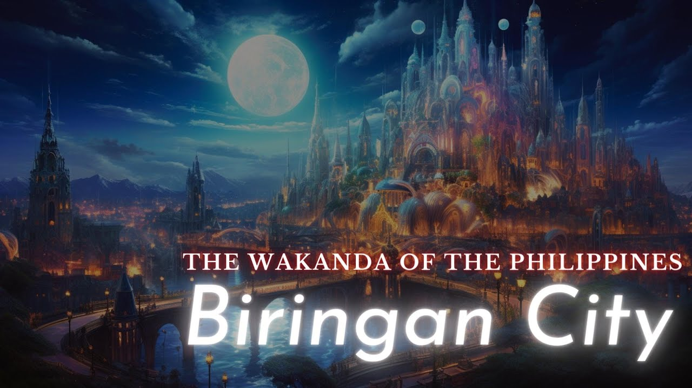

Welcome to the University of Biringan, where myth and reality intertwine to create an educational experience unlike any other. Nestled in the heart of the Philippines, our university draws inspiration from the enigmatic legend of Biringan City, a place veiled in mystery and wonder. Just as Biringan City is said to exist in a realm beyond our own, the University of Biringan stands as a beacon of knowledge that transcends conventional boundaries. Here, students embark on a journey of discovery, delving into realms both seen and unseen, as they explore the depths of human understanding and the mysteries of the universe. Much like the elusive city itself, our university embodies a sense of intrigue and fascination. As students wander through our hallowed halls, they may catch whispers of ancient tales and encounters with otherworldly beings. Yet, amidst the whispers of folklore, they will also find a vibrant community of scholars, eager to unlock the secrets of the past and forge new paths into the future. At the University of Biringan, we embrace the unknown and embrace the extraordinary. Our curriculum is as diverse as the inhabitants of Biringan City, encompassing fields of study that range from the sciences to the arts, from the mundane to the magical. Here, students are encouraged to think beyond the confines of traditional academia, to question the nature of reality, and to dare to dream of worlds beyond our own. Join us as we embark on a journey into the unknown, where every discovery is a testament to the boundless human spirit. Welcome to the University of Biringan, where the pursuit of knowledge knows no bounds.
Animator: Create animated sequences for films, television shows, commercials, or video games. This role involves bringing characters, environments, and objects to life through movement and expression. Character Designer: Specialize in conceptualizing and designing characters for various media platforms, including animation, gaming, and advertising. Character designers create memorable and visually appealing characters that resonate with audiences.
Storyboard Artist: Develop visual narratives by creating storyboards that outline key scenes, camera angles, and action sequences for animation projects. Storyboard artists play a crucial role in pre-production, helping to visualize and plan the overall structure of a project. Visual Effects (VFX) Artist: Use computer-generated imagery (CGI) to enhance live-action footage or create entirely digital environments and effects for films, television shows, and advertisements. VFX artists employ advanced software and techniques to seamlessly integrate digital elements into live-action footage.
Motion Graphics Designer: Produce animated graphics and visual effects for television, film titles, commercials, and online media. Motion graphics designers combine design principles with animation techniques to create engaging and dynamic visual content. Game Animator: Work in the gaming industry to create animations for characters, creatures, and environments within video games. Game animators collaborate with game designers and developers to bring gameplay elements to life and enhance player immersion.